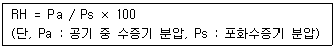
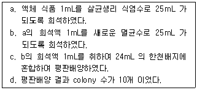
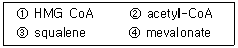
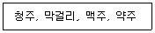

식품기사 (2011-06-12 기출문제)
1과목: 식품위생학
1. Fusarium속 곰팡이가 생산하는 독소가 아닌 것은?
- Trichothecene류
- Ochratoxin
- Zearalenone
- Fumonisin
(정답률: 63%)

2. 식품의 방사선 조사에 대한 설명 중 틀린 것은?
- Co-60의 감마선이 이용된다.
- 식품의 발아 억제, 숙도 조절을 목적으로 사용한다.
- 일단 조사한 식품에 문제가 있으면 다시 조사하여 사용한다.
- 완전제품의 경우 조사처리된 식품임을 나타내는 문구 및 조사도안을 표시하여야 한다.
(정답률: 90%)
3. 유전자 재조합 식품의 안전성에 대한 평가 시 평가항목이 아닌 것은?
- 항생제 내성
- 독성
- 알레르기성
- 미생물 오염수준
(정답률: 86%)
4. Clostridium botulinum의 아포형 중에서 내열성이 가장 약한 것은?
- A 형균
- B 형균
- F 형균
- E 형균
(정답률: 76%)
5. 라면 등의 식품에서 지나친 건조에 의해 발생할 수 있는 가장 중요한 위생문제는?
- 지방의 산화
- 단백질 변성
- 전분의 노화
- 무기질 산화
(정답률: 75%)
6. 자연독을 함유하고 있는 식물과 독소의 연결 중 틀린 것은?
- 독버섯 - 아마니타톡신(amanitatoxin)
- 피마자 - 리신(ricin)
- 독미나리 - 테물린(temuline)
- 목화씨 - 고시폴(gossypol)
(정답률: 64%)
7. 다음 중 열가소성 수지는?
- polyvinyl chloride(PVC)
- phenol 수지
- melamine 수지
- epoxy 수지
(정답률: 75%)
8. 부적당한 캔을 사용할 때 다음 통조림 식품 중 납과 주석의 용출로 내용식품을 오염시킬 우려가 가장 큰 것은?
- 어육
- 식육
- 과즙
- 연유
(정답률: 79%)
9. 식품 중의 포름알데히드(formaldehyde)검사에서 chromotropic acid 반응의 정색은?
- 가온 시에 자색으로 변한다.
- 가온 시에 적색으로 변한다.
- 냉각 시에 흑색으로 변한다.
- 냉각 시에 백색으로 변한다.
(정답률: 69%)
10. 식품에 사용되는 보존료의 조건에 적합하지 않은 것은?
- 독성이 없거나 매우 미미할 것
- 식품의 물성에 따라 작용이 가변적일 것
- 미량 사용으로 효과적일 것
- 장기간 효력을 나타낼 것
(정답률: 84%)
11. 3,4-benzopyrene과 관계없는 것은?
- 살충제 농약
- 자동차 배기가스 및 공장매연
- 발암성 물질
- 다환 방향족 탄화수소
(정답률: 72%)
12. 식품위생 검사에서 대장균을 위생지표세균으로 쓰는 이유가 아닌 것은?
- 대장균은 비병원성이나 병원성 세균과 공존할 가능성이 많기 때문에
- 대장균의 많고 적음은 식품의 신선도 판정의 기준이 되기 때문에
- 대장균의 존재는 분변 오염을 의미하기 때문에
- 식품의 위생적인 취급 여부를 알 수 있기 때문에
(정답률: 64%)
13. 위해평가(risk assessment)의 주요 요소가 아닌 것은?
- 위험성 확인
- 위험성 결정
- 노출 평가
- 위해 치료
(정답률: 87%)
14. 다음 중 수용성인 산화방지제는?
- Ascorbic acid
- Butylated hydroxy anisole(BHA)
- Butylated hydroxy toluene(BHT)
- Propyl gallate
(정답률: 83%)
15. 선어패류를 저온 저장할 경우 다른 식품에 비해서 선도유지 가능 유효기간이 짧은 이유는?
- 대장균군이 다수 부착되었기 때문
- 저온성 세균이 다수 부착되었기 때문
- 호염성 세균이 다수 부착되었기 때문
- 비브리오균이 다수 부착되었기 때문
(정답률: 78%)
16. 다음 중 성장에 있어 가장 높은 수분활성도를 요구하는 균은?
- 곰팡이
- 효모
- 세균
- 내삼투압성 곰팡이
(정답률: 80%)
17. 다음 감염병 중 바이러스에 의해 감염되지 않는 것은?
- 장티푸스
- 폴리오
- 인플루엔자
- 유행성 간염
(정답률: 76%)
18. 식품첨가물인 표백제를 설명한 것 중 틀린 것은?
- 과산화수소는 환원형 표백제이다.
- 아황산염류에 의한 표백은 표백제가 잔류하는 동안에만 효과가 있다.
- 무수아황산은 과실주의 표백제이다.
- 아황산염류는 천식환자에게 민감한 반응을 나타낼 수 있다.
(정답률: 66%)
19. 불연속 멸균법(간헐멸균법)의 설명으로 틀린 것은?
- 상압 수증기를 이용한 멸균법이다.
- 100℃에서 3회에 걸쳐 시행하는 것이 보통이다.
- 고압멸균기가 없을 때에 대체가 가능하다.
- 영양세포는 모두 죽지만 포자(spore)는 완전히 죽일 수 없다.
(정답률: 63%)
20. 유기염소제 농약의 사용이 금지됨에 따라서 그 대용으로 사용되기 위해 만들어진 농약으로 체내에서 콜린에스테라아제(cholinesterase)를 저해하는 것은?
- 유기불소제
- 유기수은제
- 유기인제
- 카바메이트제
(정답률: 48%)
2과목: 식품화학
21. 30%의 수분과 30%의 설탕(sucrose)을 함유하고 있는 어떤 식품의 수 분활성도는? (단, 분자량의 H2O : 18, C6H12O6 : 342)
- 0.98
- 0.95
- 0.82
- 0.90
(정답률: 64%)
22. 색소 성분의 설명으로 틀린 것은?
- 카로티노이드 색소는 지용성 물질이다.
- 홍차의 색소를 결정하는 성분은 theaflavin이다.
- 새우나 게를 가열처리할 때 청록색 색소 성분은 적색의 아스타신(astacin)으로 변한다.
- 플라보노이드는 노란색 계통의 지용성 색소이다.
(정답률: 66%)
23. amylose는 어느 구조를 그 단위로 하고 있는가?
- 포도당과 포도당의 α-1, 4결합
- 포도당과 포도당의 α-2, 4결합
- 포도당과 포도당의 α-1, 6결합
- 포도당과 포도당의 α-1, 1결합
(정답률: 88%)
24. 일반적으로 단맛을 내는 단당류 관련 물질로서 특히 저칼로리 감미료로 이용되는 물질은?
- 배당체(glycoside)
- 전분
- 당알코올(sugar alcohol)
- 글리코겐(glycogen)
(정답률: 84%)
25. 감자를 절단한 후 공기 중에 방치하였더니 표면의 색이 흑갈색으로 변하였다. 이것은 다음의 어느 기작에 의한 것인가?
- Maillard reaction 에 의한 갈변
- tyrosinase 에 의한 갈변
- NADH oxidase 에 의한 갈변
- ascorbic acid oxidation 에 의한 갈변
(정답률: 76%)
26. 유지의 자동산화를 촉진시키지 않는 것은?
- 금속이온
- 광선
- 온도
- 질소가스
(정답률: 77%)
27. 맥주를 제조함에 있어 전분을 발효성 당으로 분해하며 전분에 의한 혼탁을 제거할 목적으로 이용되는 효소는?
- β-amylase
- tannase
- invertase
- lipase
(정답률: 72%)
28. 유지의 굴절율에 대한 설명으로 옳은 것은?
- 불포화도와 굴절율은 상관관계가 없다.
- 불포화도가 클수록 굴절율은 증가한다.
- 분자량과 굴절율은 상관관계가 없다.
- 분자량이 클수록 굴절율은 감소한다.
(정답률: 78%)
29. 콩에 함유된 특성성분이 아닌 것은?
- 이소플라본(isoflavone)
- 레시틴(lecithin)
- 라피노오스(raffinose)
- 쿠어세틴(quercetin)
(정답률: 70%)
30. GC와 HPLC에 대한 설명으로 틀린 것은?
- GC는 고감도의 검출이 가능한다.
- GC는 고정상과 이동상의 선택성이 비교적 크다.
- HPLC는 시료를 비교적 쉽게 회화할 수 있다.
- HPLC는 열에 약하거나 비휘발성인 성분들의 분석에 주로 사용된 다.
(정답률: 59%)
31. 요오드가(iodine value)란 지방의 어떤 특성을 표시하는 기준인가?
- 신패도
- 경화도
- 유리지방산 함량
- 불포화도
(정답률: 65%)
32. 육류의 사후경직과 숙성에 대한 내용으로 틀린 것은?
- 육류를 숙성시키면 신장성이 감소되고 보수성은 증가한다.
- 사후경직 시 actomyosin이 생성된다.
- 숙성 시 가용성 단백질이 증가한다.
- 사후경직 시 glycogen 함량과 pH가 낮아진다.
(정답률: 57%)
33. 과일의 향기성분과 가장 관계가 깊은 것은?
- 아민 화합물
- sulfonylrl 화합물
- ester 화합물
- 방향족 화합물
(정답률: 76%)
34. 다음 식물성 카로티노이드(carotenoid)색소 중에서 프로비타민 A가 아닌 것은?
- 당근의 α-carotene
- 고추의 β-carotene
- 옥수수의 cryptoxanthin
- 토마토의 lycopene
(정답률: 67%)
35. 클로로필(chlorophyll)을 알칼리로 처리하였더니 피톨(phytol)이 유리되고 용액의 색깔이 청록색으로 변했다. 다음 중 어느 것이 형성된 것인가?
- pheophytin
- pheophorbide
- chlorophyllide
- chlorophylline
(정답률: 77%)
36. 뼈와 치아의 구성성분이 아닌 것은?
- Mg
- K
- Ca
- P
(정답률: 57%)
37. 고기류가 부패하면서 생성되는 물질이 아닌 것은?
- 아민류(amines)
- 알리신(allicin)
- 인돌(indole) 또는 스케톨(skatole)
- 암모니아(ammonia)
(정답률: 76%)
38. 방향족 아미노산에 속하는 것은?
- alanine
- glutamic acid
- phenylalanine
- methionine
(정답률: 66%)
39. 과실이나 채소의 효소적 갈변현상을 막는 다음 방법 중 갈변효소에 작용하는 것과 가장 관계가 먼 것은?
- 데치기(blanching)
- 2% 소금물에 담금
- NaHCO3 용액에 처리
- 설탕으로 처리
(정답률: 34%)
40. 물, 청량음료, 식용유 등 묽은 용액은 어떤 유체의 특성을 나타내는가?
- Newton 유체
- Pseudoplastic 유체
- Bingham plastic 유체
- Dilatant 유체
(정답률: 81%)
3과목: 식품가공학
41. 유지 정제에서 탈산 공정은 다음 중 무엇을 제거하기 위한 것인가?
- 왁스
- 글리세린
- 스테롤
- 유리 지방산
(정답률: 76%)
42. 통조림 제조 시 바른 공정은?
- 탈기 - 밀봉 - 냉각 - 살균
- 살균 - 밀봉 - 탈기 - 냉각
- 탈기 - 밀봉 - 살균 - 냉각
- 밀봉 - 살균 - 탈기 - 냉각
(정답률: 61%)
43. 난백분(달걀 흰자가루)의 제조법에 대한 설명 중 틀린 것은?
- 난액 중 흰자위만을 건조시켜 가루로 만든 것이다.
- 보통 8% 정도의 수분을 함유한다.
- 흰자위를 분리즉시 그대로 건조시켜야 용해도가 높고, 색도 좋아진다.
- 건조시키기 전에 발효시키면 흰자위의 분리가 용이하다.
(정답률: 65%)
44. 고형분 함량이 45%인 농축오렌지 주스의 건량기준 수분함량은 약 얼마인가?
- 55%
- 72%
- 102%
- 122%
(정답률: 50%)
45. 라미네이트 필름에 관한 설명 중 맞는 것은?
- 알루미늄박만을 포장재료로 사용한 것이다.
- 종이를 사용한 것이다.
- 두 가지 이상의 필름, 종이 또는 알루미늄박을 접착시킨 것을 말한다.
- 셀로판을 사용한 포장재료를 말한다.
(정답률: 81%)
46. 밀감 통조림의 백탁에 대한 설명 중 틀린 것은?
- hesperidin이 용출되어 백탁이 형성된다.
- 조기 수확한 밀감에서 자주 발생한다.
- 수세를 너무 길게 하면 발생하기 쉽다.
- 산 처리를 길게, 알칼리 처리를 짧게 하면 억제된다.
(정답률: 49%)
47. 밀가루 단백질인 글루텐(gluten)을 구성하는 아미노산 조성 중 알파-나선구조(α-helix) 함량을 저하시켜 불규칙한 고차구조를 없애며 고도로 분자를 서로 엉키게 하여 탄력성을 부여하는 아미노산은?
- proline
- histidine
- glycine
- aspartic acid
(정답률: 62%)
48. 샐러드유(salad oil)의 특성과 거리가 먼 것은?
- 불포화 결합에 수소를 첨가한다.
- 색과 냄새가 없다.
- 저장 중에 산패에 의한 풍미의 변화가 적다.
- 저온에서 혼탁하거나 굳어지지 않는다.
(정답률: 68%)
49. 유지 추출 용매의 구비조건이 아닌 것은?
- 기화열과 비열이 작아 회수하기 용이할 것
- 인화, 폭발성, 독성이 적을 것
- 모든 성분을 잘 추출, 용해시킬 수 있을 것
- 유지와 추출박에 이취, 이미가 남지 않을 것
(정답률: 81%)
50. 소시지 가공제품 제조 시 염지의 효과가 아닌 것은?
- 근육단백질의 용해성을 증가시킨다.
- 보수성과 결착성을 증진시킨다.
- 방부성과 독특한 맛을 갖게 한다.
- 단백질을 변성시키고 살균한다.
(정답률: 73%)
51. 피단(pidan)의 설명으로 가장 알맞은 것은?
- 계란을 삶아서 난각을 제거하고 조미액에 담가서 맛이 든 다음 훈연시켜 저장성이 우수하고 풍미가 양호한 제품이다.
- 계란을 껍질째로 NaOH, 식염의 수용액에 넣어, 알칼리 성분을 계란속으로 서서히 침입시켜 난단백을 응고시킨 제품이다.
- 계란을 물엿에 끓여 둔부를 깨어 스푼이 들어갈 만큼 난각을 벗기고 식염, 후추를 뿌려 만든다.
- 계란을 염지액에 담근 후 한번 끓이고 냉각시켜 만든다.
(정답률: 82%)
52. 식품의 냉장 저장 시 저온장해를 받는 과채류와 그 특성이 잘못 연결된 것은?
- 바나나 : 과치의 갈변, 추숙 불량
- 오이 : 내부 연화 갈변
- 고구마 : 중심부의 경화
- 토마토 : 수침연화부패
(정답률: 69%)
53. 수산 건제품의 처리 방법에 대한 설명으로 틀린 것은?
- 자건품 : 수산물을 그대로 또는 소금을 넣고 삶은 후 말린 것
- 배건품 : 수산물을 저온에서 말린 것
- 염건품 : 수산물에 소금을 넣고 말린 것
- 동건품 : 수산물을 동결ㆍ융해하여 말린 것
(정답률: 79%)
54. 육류 가공에서 훈연의 목적을 가장 잘 설명한 것은?
- 제품의 저장성과 맛을 높인다.
- 제품의 방부성과 영양가를 높인다.
- 제품의 빛깔을 좋게 하고 영양가를 높인다.
- 제품의 수분 감소와 영양가를 목적으로 한다.
(정답률: 74%)
55. 다음 공식은 무엇을 나타낸 것인가?

- 절대습도
- 상대습도
- 습비열
- 습용적
(정답률: 78%)
56. 우유를 원료로 사용하여 치즈 제조 시 우유를 응고시켜 curd를 만드는데 사용하는 방법은?
- 단백질 분해효소 작용
- 산침전
- 가열침전
- lactase 작용
(정답률: 51%)
57. 알루미늄박(AL-foil)에 폴리에틸렌 필름을 입혀서 사용하는 목적은 무엇인가?
- 산소나 가스의 차단
- 내유성 향상
- 빛의 차단
- 열접착성 향상
(정답률: 71%)
58. 25℃의 공기(밀도 1.149kg/m3)를 80℃ 로 가열하여 10m3/s의 속도로 건조기 내로 송입하고자 할 때 소요 열량은? (단, 공기의 비열은 25℃ 에서는 1.0048kJ/kgㆍK, 80℃ 에서는 1.0090kJ/kgㆍK이다.)
- 636kW
- 393kW
- 318kW
- 954kW
(정답률: 40%)
59. 다음의 두부 응고제 중 물에 잘 녹지 않아 응고반응이 비교적 느리지만 비교적 보수성과 탄력성이 우수한 두부를 제조하는 것은?
- glucono-δ-lactone
- MgCl2
- CaCl2
- CaSO4
(정답률: 60%)
60. 콩 단백질의 특성과 관계가 없는 것은?
- 콩 단백질은 묽은 염류용액에 용해된다.
- 콩을 수침하여 물과 함께 마쇄하면, 인산칼륨 용액에 콩 단백질이 용출된다.
- 콩 단백질은 90%가 염류용액에 추출되며, 이중 80%이상이 glycinin이다.
- glycinin은 양(+)전하를 띠고 있다.
(정답률: 78%)
4과목: 식품미생물학
61. 미생물의 영양원에 대한 설명으로 틀린 것은?
- 종속영양균은 탄소원으로 주로 탄수화물을 이용하지만 그 종류는 균종에 따라 다르다.
- 유기태 질소원으로 요소, 아미노산 등은 효모, 곰팡이, 세균에 의하여 잘 이용된다.
- 무기염류는 미생물의 세포구성성분, 세포내 삼투압 조절 또는 효소 활성 등에 필요하다.
- 생육인자는 미생물의 종류와 관계없이 일정하다.
(정답률: 79%)
62. 세균에서 일어나는 유전물질 전달(gene transfer) 방법이 아닌 것은?
- 형질전환(transformation)
- 형질도입(transduction)
- 전사(transcription)
- 접합(conjugation)
(정답률: 68%)
63. 다음 중 진핵생물 소기관의 특성과 기능이 맞지 않은 것은?
- 미토콘드리아 - 에너지발생, 호흡
- 소포체 - 탄수화물 합성
- 골지체 - 효소 및 거대분자 분비
- 액포 - 음식소화, 노폐물 배출
(정답률: 68%)
64. 여러 가지 변이원 처리에 의해 유발된 돌연변이가 원상태로 수복되는 수복기구가 아닌 것은?
- 광희복
- 제거수복
- 재조합수복
- 염기첨가
(정답률: 76%)
65. 유기화합물 합성을 위하여 햇빛을 에너지원으로 이용하는 광독립영양생물(photoautotroph)은 탄소원으로 무엇을 이용하는가?
- 메탄
- 이산화탄소
- 포도당
- 지방산
(정답률: 83%)
66. 붉은 색소를 생성하며 빵, 육류, 우유 등에 번식하여 적색으로 변하게 하는 세균은?
- Serratia 속
- Escherichia 속
- Pseudomonas 속
- Lactobacillus 속
(정답률: 67%)
67. 다음 중 Gram 음성세균은?
- 젖산균
- 방선균
- 대장균
- 포도상구균
(정답률: 74%)
68. Lactobacillus leichmanii(ATCC 7830)는 어떤 생육인자를 정량할 때 이용하는가?
- 비타민 B2
- 비타민 B6
- 비타민 B12
- 비오틴(biotin)
(정답률: 51%)
69. 황국균이라고 불리며 누룩이나 메주의 생산에 관여하는 미생물은?
- Monascus anka
- Penicillium camemberti
- Aspergillus oryzae
- Mucor rouxii
(정답률: 81%)
70. 포도당에 효소를 작용시켜 동일한 분자량이면서 감미도가 증가한 당을 만들려고 한다. 이와 관계하는 효소는?
- Glucose oxydase
- Glucose isomerase
- Glucose dehydrogenase
- Glucokinase
(정답률: 73%)
71. 접합균류에 속하는 곰팡이는?
- Rhizopus 속
- Aspergillus 속
- Penicillium 속
- Fusarium 속
(정답률: 60%)
72. 세균의 증식 방법은?
- 영양세포의 출아법으로 증식한다.
- 포자낭 포자를 형성하여 증식한다.
- 접합포자를 형성하면서 증식한다.
- 분열법으로 증식하고 내생포자를 형성하는 경우도 있다.
(정답률: 74%)
73. 미생물 배양 시 생육곡선 단계에 대한 설명으로 틀린 것은?
- 유도기(Lag phase)에 균은 RNA 함량이 증가하고 세포대사활동이 왕성해진다.
- 대수기(Logarithmic phase)에는 최단의 세대시간으로 세포분열이 일어난다.
- 정지기(Stationary phase)에는 배지중의 영양원 소비와 pH 변화로 인해 균의 분열이 정지된다.
- 감퇴기(Phase of decline)에는 증식세포 보다 사멸세포가 많아지고 균체 자기소화도 일어난다.
(정답률: 51%)
74. 설탕배지에서 배양하면 Dextran을 생산하는 균은?
- Bacillus levaniformans
- Leuconostoc mesenteroides
- Bacillus subtilis
- Aerobacter levanicum
(정답률: 75%)
75. 바이러스(virus)와 파지(phage)에 대한 설명으로 틀린 것은?
- Phage는 동물, 식물 기생 파지와 세균, 조류기생 파지로 분류한다.
- Virus는 동ㆍ식물 세균의 세포에 기생 생식하는 대체로 초여과성 입자이다.
- Phage는 두부, 미부, 기부로 구성되어 있다.
- Virus 중에서 세균에 기생하는 경우를 Phage 또는 bacteriophage라 한다.
(정답률: 58%)
76. CH3COCOOH +NADH ⟶ CH3CHOHCOOH +NAD 의 반응에 관여하는 효소는?
- alcohol dehydrogenase
- lactic acid dehydrogenase
- succinic acid dehydrogenase
- α-ketoglutaric acid dehydrogenase
(정답률: 50%)
77. 플라스미드(plasmid)에 관한 설명으로 틀린 것은?
- 다른 종의 세포 내에도 전달된다.
- 세균의 성장과 생식과정에 필수적이다.
- 약제에 대한 저항성을 가진 내성인자. 세균의 자웅을 결정하는 성결정인자 등이 있다.
- 염색체와 독립적으로 존재하며, 염색체 내에 삽입될 수 있다.
(정답률: 68%)
78. 액체 식품 중의 생존균수를 희석평판 배양법으로 아래와 같이 측정하였을 때 식품 1mL 중의 colony 수는?

- 6.0 × 103
- 6.3 × 103
- 1.5 × 103
- 1.6 × 103
(정답률: 69%)
79. 식빵의 점질화(rope) 현상을 일으키는 미생물은?
- Rhizopus nigricans
- Bacillus licheniformis
- Penicillium citrinum
- Aspergillus niger
(정답률: 50%)
80. 세균이 그람 염색에서 그람양성과 그람음성의 차이를 보이는 것은 다음중 무엇의 차이 때문인가?
- 세포벽(cell wall)
- 세포막(cell membrane)
- 핵(nucleus)
- 플라스미드(plasmid)
(정답률: 75%)
5과목: 생화학 및 발효학
81. 산화에 의한 생체막의 손상을 억제하며, 대표적인 항산화제로 이용되는 비타민은?
- 비타민 A
- 비타민 B
- 비타민 D
- 비타민 E
(정답률: 79%)
82. 술덧의 전분 함량 16%에서 얻을 수 있는 탁주의 알코올 도수는?
- 약 8도
- 약 20도
- 약 30도
- 약 40도
(정답률: 78%)
83. α-amino acid의 산화적 탈아미노반응(oxidate deamination)은 두 단계로 진행이 되는데 이 과정에서의 최종 생성물은?
- α-keto acid와 암모니아
- oil해 peptide
- CO2와 amino acid
- acetyl-CoA
(정답률: 42%)
84. 시토크롬(cytochrome)의 구조에서 가장 필수적인 원소는?
- 코발트(Co)
- 마그네슘(Mg)
- 철(Fe)
- 구리(Cu)
(정답률: 63%)
85. 다음 화합물은 콜레스테롤(cholesterol) 생합성의 중간 산물들이다. 올바른 순서로 나열한 것은?

- ② ⟶ ① ⟶ ④ ⟶ ③
- ③ ⟶ ② ⟶ ① ⟶ ④
- ④ ⟶ ① ⟶ ③ ⟶ ②
- ① ⟶ ③ ⟶ ② ⟶ ④
(정답률: 61%)
86. 케톤체에 대한 설명으로 맞는 것은?
- 간은 케톤체 분해 기능이 강하다.
- 케톤체는 근육에서 생성되어 간에서 산화된다.
- 과잉의 탄수화물은 케톤체로 전환되어 축적된다.
- 케톤체는 간에서 생성되어 뇌와 심장, 뼈대근육, 콩팥 등의 말초조직에서 산화된다.
(정답률: 71%)
87. 핵산관련물질이 정미성을 갖추기 위해서 필요한 구조가 아닌 것은?
- purine환의 6위치에 OH기가 있어야 한다.
- ribose의 5'위치에 인산기가 있어야 한다.
- nucleotide의 당은 ribose에만 정미성이 있다.
- 고분자 nucleotide, nucleoside 및 염기 중에서 mononucleotide에만 정미성이 있는 것이 존재한다.
(정답률: 57%)
88. DNA 분자의 purine과 pyrimidine 염기쌍 사이를 연결하는 결합은?
- 공유결합
- 수소결합
- 이온결합
- 인산결합
(정답률: 75%)
89. 아미노산으로부터 아미노기가 제거되는 반응과 조효소를 바르게 연결한 것은?
- 산화적 탈아미노반응(PALP)과 요소회로(NADP)
- 아미노기 전이반응(FMN/FAD)과 탈탄산반응(NADP)
- 아미노기 전이반응(PALP)과 산화적 탈아미노반응(FMN/FAD, NAD)
- 탈탄산반응(PALP)과 요소회로(NADPH)
(정답률: 52%)
90. 다음 중 β-lactam 계열의 항생 물질인 것은?
- penicillin
- tetracycline
- chloramphenicol
- kanamycin
(정답률: 74%)
91. 광합성의 명반응과 암반응에 대한 설명으로 옳지 않은 것은?
- 명반응은 온도의 영향을 받지 않으며, 빛의 세기에 영향을 받는다.
- 암반응은 온도차에 민감하다.
- 명반응은 빛에너지를 ATP 등의 화학에너지로 전환한다.
- 암반응은 질소고정을 이용하여 질소화합물로 동화시키는 효소반응이다.
(정답률: 58%)
92. ATP +glucose ⟶ ADP +glucose - 6 - phosphate에서 촉매로 작용하는 효소는?
- aldolase
- phosphorylase
- fructokinase
- hexokinase
(정답률: 47%)
93. 포도당 1 mole이 혐기 상태에서 해당 작용될 때 몇 mole의 ATP가 생성되는가?
- 2 mole
- 8mole
- 16mole
- 38mole
(정답률: 75%)
94. 지방산의 생합성 속도를 결정하는 효소는?
- 시트르산 분해효소(Citrate lyase)
- 아세틸-CoA 카르복실화효소(Acetyl-CoA carboxylase)
- ACP-아세틸기 전이효소(ACP-acetyl transferase)
- ACP-말로닐기 전이효소(ACP-malonyl transferase)
(정답률: 79%)
95. 비타민의 이름과 관련된 보효소의 이름이 잘못 짝지어진 것은?
- 비타민 B2 - FAD(flavin adenine dinucleotide)
- 나이아신 - NAD(nicotinamide adenine dinucleotide)
- 판토텐산 - CoA(coenzyme A)
- 엽산 - TPP(thiamine pyrophosphate)
(정답률: 58%)
96. 당분해(glycolysis)에 관여하는 효소 중에는 보조인자(cofactor)로써 화학성분(금속이온 등)을 필요로 하는 효소도 있다. 이와 같은 효소의 단백질 부분을 무엇이라 하는가?
- 아포효소(apoenzyme)
- 보조효소(coenzyme)
- 완전효소(holoenzymes)
- 보결분자단(prosthetic group)
(정답률: 40%)
97. 정치배양과 속초법(quick vinegar process)에 의한 초산 발효에 가장 적합한 알코올 농도는?
- 정치배양법 5%, 속초법 10%
- 정치배양법 15%, 속초법 20%
- 정치배양법 10%, 속초법 5%
- 정치배양법 20%, 속초법 15%
(정답률: 39%)
98. 미생물에 대한 탈질화 작용(denitrification)순서는?
- NO3 ⟶ NO2 ⟶ N2O ⟶ NO ⟶ N2
- NO3 ⟶ NO2 ⟶ NO ⟶ N2O ⟶ N2
- NO3 ⟶ N2O ⟶ NO ⟶ NO2 ⟶ N2
- NO3 ⟶ NO ⟶ NO2 ⟶ N2O ⟶ N2
(정답률: 64%)
99. HFCS(High Fructose Corn Syrup)55의 생산에 이용되는 효소는?
- amylase
- glucoamylase
- glucose isomerase
- glucose dehydrogenase
(정답률: 57%)
100. 다음 주류 중 제조 방법 및 형식 상 다른 하나는?

- 청주
- 막걸리
- 맥주
- 약주
(정답률: 63%)